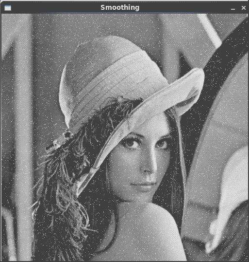

文题：OpenCV图像处理篇之图像平滑
作者：xiahouzuoxin
日期：2014-09-18
转载请注明出处：http://xiahouzuoxin.github.io/notes
图像平滑与图像模糊是同一概念，主要用于图像的去噪。平滑要使用滤波器，为不改变图像的相位信息，一般使用线性滤波器，其统一形式如下：
其中h称为滤波器的核函数，说白了就是权值。不同的核函数代表不同的滤波器，有不同的用途。
在图像处理中，常见的滤波器包括：
归一化滤波器（Homogeneous blur）
也是均值滤波器，用输出像素点核窗口内的像素均值代替输出点像素值。
高斯滤波器（Guassian blur）
是实际中最常用的滤波器，高斯滤波是将输入数组的每一个像素点与 高斯内核 卷积将卷积和当作输出像素值。高斯核相当于对输出像素的邻域赋予不同的权值，输出像素点所在位置的权值最大（对应高斯函数的均值位置）。二维高斯函数为，
中值滤波器（median blur）
中值滤波将图像的每个像素用邻域(以当前像素为中心的正方形区域)像素的中值代替。对椒盐噪声最有效的滤波器，去除跳变点非常有效。
双边滤波器（Bilatrial blur）
为避免滤波器平滑图像去噪的同时使边缘也模糊，这种情况下使用双边滤波器。关于双边滤波器的解释参见http://homepages.inf.ed.ac.uk/rbf/CVonline/LOCAL_COPIES/MANDUCHI1/Bilateral_Filtering.html
下面的程序将先给标准Lena图像添加椒盐噪声，分别使用4种不同的滤波器进行平滑操作，请注意观察不同滤波器对椒盐噪声的去噪效果！
/*
* FileName : image_smoothing.cpp
* Author : xiahouzuoxin @163.com
* Version : v1.0
* Date : Wed 17 Sep 2014 08:30:25 PM CST
* Brief :
*
* Copyright (C) MICL,USTB
*/
#include "cv.h"
#include "imgproc/imgproc.hpp"
#include "highgui/highgui.hpp"
using namespace std;
using namespace cv;
const int MAX_KERNEL_LENGTH = 10;
const char *wn_name = "Smoothing";
static void salt(Mat &I, int n);
static void disp_caption(const char *wn_name, Mat src, const char *caption);
static void disp_image(const char *wn_name, Mat I);
/*
* @brief
* @inputs
* @outputs
* @retval
*/
int main(int argc, char *argv[])
{
if (argc<2) {
cout<<"Usage: ./image_smoothing [file name]"<<endl;
return -1;
}
Mat I = imread(argv[1], CV_LOAD_IMAGE_GRAYSCALE);
salt(I, 6000);
imshow(wn_name, I);
waitKey(0);
Mat dst; // Result
/* Homogeneous blur */
disp_caption(wn_name, I, "Homogeneous blur");
for (int i=1; i<MAX_KERNEL_LENGTH; i+=2) {
blur(I, dst, Size(i, i), Point(-1,-1));
disp_image(wn_name, dst);
}
/* Guassian blur */
disp_caption(wn_name, I, "Gaussian blur");
for (int i=1; i<MAX_KERNEL_LENGTH; i+=2) {
GaussianBlur(I, dst, Size(i, i), 0, 0);
disp_image(wn_name, dst);
}
/* Median blur */
disp_caption(wn_name, I, "Median blur");
for (int i=1; i<MAX_KERNEL_LENGTH; i+=2) {
medianBlur(I, dst, i);
disp_image(wn_name, dst);
}
/* Bilatrial blur */
disp_caption(wn_name, I, "Bilatrial blur");
for (int i=1; i<MAX_KERNEL_LENGTH; i+=2) {
bilateralFilter(I, dst, i, i*2, i/2);
disp_image(wn_name, dst);
}
waitKey(0);
return 0;
}
/*
* @brief 显示提示文字（滤波方法）
* @inputs
* @outputs
* @retval
*/
static void disp_caption(const char *wn_name, Mat src, const char *caption)
{
Mat dst = Mat::zeros(src.size(), src.type());
putText(dst, caption, Point(src.cols/4, src.rows/2), CV_FONT_HERSHEY_COMPLEX, 1, Scalar(255,255,255));
imshow(wn_name, dst);
waitKey(0);
}
/*
* @brief 显示图像
* @inputs
* @outputs
* @retval
*/
static void disp_image(const char *wn_name, Mat I)
{
imshow(wn_name, I);
waitKey(1000);
}
/*
* @brief 添加椒盐噪声
* @inputs
* @outputs
* @retval
*/
static void salt(Mat &I, int n=3000)
{
for (int k=0; k<n; k++) {
int i = rand() % I.cols;
int j = rand() % I.rows;
if (I.channels()) {
I.at<uchar>(j,i) = 255;
} else {
I.at<Vec3b>(j,i)[0] = 255;
I.at<Vec3b>(j,i)[1] = 255;
I.at<Vec3b>(j,i)[2] = 255;
}
}
}上面程序的逻辑非常清晰：
读入灰度图，并添加椒盐噪声（6000个噪声点）：
Mat I = imread(argv[1], CV_LOAD_IMAGE_GRAYSCALE);
salt(I, 6000);
disp_caption和disp_image函数分别是用于显示提示文字和平滑过程中的变化图像的，平滑过程中图像的变化如下图：

注意观察上面的图，中值滤波（Median Blur）对椒盐噪声的效果最好！
四种滤波方法分别使用到4个OpenCV函数，这些函数的声明都在imgproc.hpp中，这些函数的前2个参数都是原图像和滤波后图像。
归一化滤波器blur的第3个参数为滤波核窗口的大小，Size(i,i)表示ixi大小的窗口。
高斯滤波器GaussianBlur第3个参数也是滤波核窗口的大小，第4、第5个参数分辨表示x方向和y方向的δ。
中值滤波器medianBlur第3个参数是滤波器的长度，该滤波器的窗口为正方形。
双边滤波器的函数原型如下：
//! smooths the image using bilateral filter
CV_EXPORTS_W void bilateralFilter( InputArray src, OutputArray dst, int d,
double sigmaColor, double sigmaSpace,
int borderType=BORDER_DEFAULT );本程序使用的Makefile文件为：
TARG=image_smoothing
SRC=image_smoothing.cpp
LIB=-L/usr/local/lib/
INC=-I/usr/local/include/opencv/ -I/usr/local/include/opencv2
CFLAGS=
$(TARG):$(SRC)
g++ -g -o $@ ${CFLAGS} $(LIB) $(INC) \
-lopencv_core -lopencv_highgui -lopencv_imgproc \
$^
.PHONY:clean
clean:
-rm $(TARG) tags -f